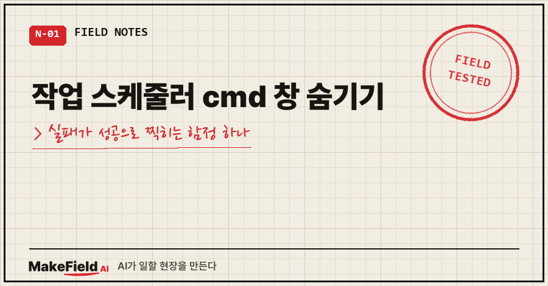
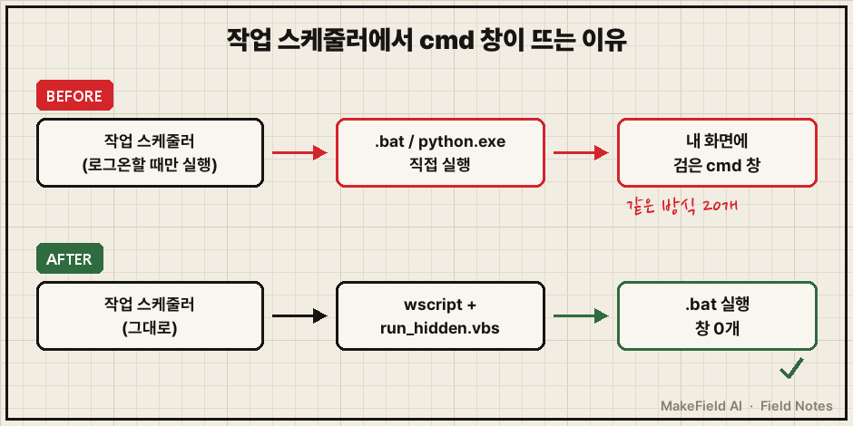
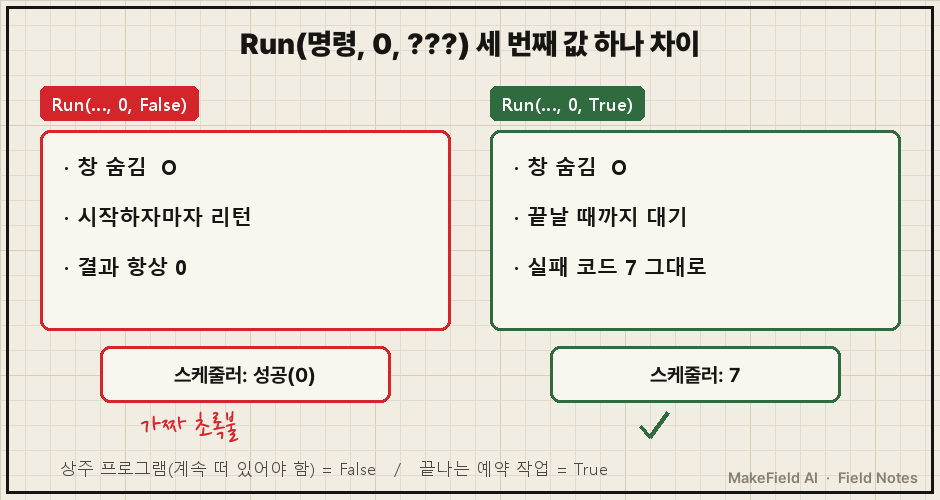
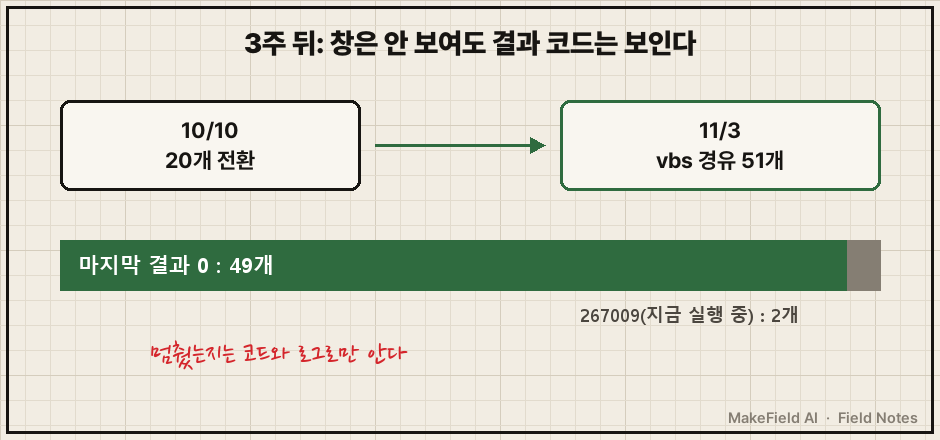

10월 10일 저녁 8시, 모니터에 검은 cmd 창 두 개가 떠 있었어요.
제가 띄운 게 아니라, 예약해 둔 자동 작업들이 알아서 띄운 창이었습니다.
그래서 AI한테 이렇게 물었어요.
"콘솔창은 왜 두개나 떠있는가? cmd창인거 같은데 좀 안뜨게 못하는가?"
결론부터 말씀드릴게요. 작업 스케줄러 cmd 창 숨기기는 vbs 파일 한 장이면 되는데, Run(명령, 0, True)처럼 마지막 값을 꼭 True로 둬야 합니다. False로 두면 창은 똑같이 숨지만, 작업이 실패해도 스케줄러에는 0(성공)이 찍혀요. 오늘(11월 3일) 다시 재 보니, 실패 코드 7을 내는 배치 파일이 True에선 7, False에선 0으로 나왔습니다.
제 본업은 공장 자동화 쪽이에요. 기계가 "돌았다"는 신호보다 "정상 종료"라는 기록을 더 믿는 직업병이 있는 15년차고요. 이번 얘기는 회사가 아니라 집 PC에서 돌리는 개인 자동화 이야기입니다.
1. 작업 스케줄러에서 cmd 창은 왜 뜨나요?
예약 작업이 '사용자가 로그온할 때만 실행' 방식으로 .bat이나 python.exe를 직접 부르면, 그 콘솔 창이 내 화면에 그대로 뜹니다. 고장이 아니라 원래 그렇게 동작하는 거예요.
AI가 원인을 찾아보니 그날 떠 있던 두 개는 저녁 7시 40분, 8시에 도는 작업이었어요.
그런데 문제는 두 개가 아니었습니다. 같은 방식으로 등록된 작업이 20개였어요. 그날 저녁엔 두 개가 눈에 띄었을 뿐, 다들 자기 시간에 창을 띄웠다 닫고 있었던 거죠..
백업해 둔 등록 정보를 열어 보면 이렇게 생겼어요. (경로는 일반화)
<Principal id="Author">
<LogonType>InteractiveToken</LogonType>
</Principal>
<Exec>
<Command>C:\scripts\run_daily_job.bat</Command>
</Exec>InteractiveToken은 "로그온한 사용자 화면에서 실행한다"는 뜻이에요. 그 화면에서 .bat을 직접 실행하니 창이 뜨는 겁니다.

2. 작업 스케줄러 cmd 창 숨기기 방법 4가지, 뭘 골랐나
방법은 여러 개 있어요. 그날 실제로 따져 본 것만 표로 정리하면 이렇습니다.
| 방법 | 창 | .bat도 되나 | 실패 코드 | 그날 판단 |
|---|---|---|---|---|
| pythonw.exe로 실행 | 안 뜸 | 파이썬만 | 전달됨 | 이미 이 방식인 작업은 그대로 둠 |
| '로그온 여부와 관계없이 실행'으로 변경 | 안 뜸 | 됨 | 전달됨 | 실행 방식 자체가 바뀜 → 보류 |
vbs로 감싸기 Run(…, 0, False) | 안 뜸 | 됨 | 항상 0 | 탈락 |
vbs로 감싸기 Run(…, 0, True) | 안 뜸 | 됨 | 전달됨 | 채택 |
두 번째 방법은 실제로 제 작업 하나가 이미 쓰고 있었어요. 그래서 그 작업은 원래부터 창이 안 떴고요. 이것까지 손대 보려다가 권한 거부로 막혔는데, 어차피 창이 안 뜨는 작업이라 그대로 뒀습니다.
나머지를 vbs로 간 이유는 단순해요. 작업 20개가 부르는 .bat과 파이썬 코드는 한 줄도 안 건드리고 창만 숨기고 싶었거든요.
3. 숨기다가 '가짜 성공'을 만들 뻔한 지점
여기가 이 글의 핵심이에요.
vbs의 Run 함수는 세 번째 값 하나로 성격이 완전히 바뀝니다. 마이크로소프트 공식 문서(WSH Run 메서드)에 이렇게 적혀 있어요.
True면 프로그램이 끝날 때까지 기다렸다가 그 프로그램의 오류 코드를 돌려주고, False(기본값)면 프로그램을 시작하자마자 바로 돌아오며 자동으로 0을 돌려준다. (원문 요지 번역)
기본값이 False라는 게 함정이에요. 흔히 보는 "cmd 창 숨기는 vbs" 예시처럼 세 번째 값을 빼고 쓰면, 창은 사라지는데 작업 스케줄러의 '마지막 실행 결과'는 무조건 0이 됩니다. 작업이 터져도 초록불이요.
오늘 직접 다시 재 봤습니다. exit /b 7로 일부러 실패하는 배치 파일 하나를 세 가지 방식으로 돌렸어요.
[실패 코드 7을 내는 테스트 배치, 2026-11-03 실측]
배치 파일 직접 실행 → exit=7
vbs Run(…, 0, True) 경유 → exit=7
vbs Run(…, 0, False) 경유 → exit=0사실 제 PC엔 False 버전 vbs가 이미 하나 있었어요. 채팅 봇을 창 없이 띄우는 용도로요. 그건 계속 떠 있어야 하는 프로그램이라 기다리면 안 되니까 False가 맞는 자리예요.
반대로 예약 작업은 끝나는 프로그램이고, 끝난 결과가 스케줄러에 남아야 합니다. 같은 "창 숨기기"인데 정답이 반대예요.
저는 예전에 성공 로그만 믿다가 실패를 한참 못 본 적이 있어서, 결과 코드가 0으로 뭉개지는 건 창이 뜨는 것보다 훨씬 무섭습니다. 창은 귀찮을 뿐이지만, 가짜 0은 고장을 숨기거든요.

4. 그대로 따라 하는 순서 (윈도우 10 기준)
제가 한 순서 그대로예요. 경로와 작업 이름만 일반화했습니다.
① 바꾸기 전에 작업을 XML로 백업
Export-ScheduledTask -TaskName "MyJob" | Out-File C:\scripts\backup\MyJob.xml
# 되돌릴 때
Register-ScheduledTask -TaskName "MyJob" -Xml (Get-Content C:\scripts\backup\MyJob.xml -Raw) -Force저는 20개를 전부 이렇게 따로 떠 놓고 시작했어요.
② run_hidden.vbs 저장 — 실제로 쓰고 있는 파일이에요.
' 창 없이 실행하고, 끝날 때까지 기다렸다가 종료 코드를 그대로 돌려준다
Dim sh, i, a, cmd
Set sh = CreateObject("WScript.Shell")
cmd = ""
For i = 0 To WScript.Arguments.Count - 1
a = WScript.Arguments(i)
If InStr(a, " ") > 0 Or a = "" Then a = """" & a & """"
cmd = cmd & a & " "
Next
If LCase(Right(WScript.Arguments(0), 4)) = ".bat" Or LCase(Right(WScript.Arguments(0), 4)) = ".cmd" Then
cmd = "cmd.exe /c """ & Trim(cmd) & """"
End If
WScript.Quit sh.Run(Trim(cmd), 0, True)가운데 반복문은 공백이 들어간 경로를 따옴표로 다시 감싸는 부분이고, .bat이면 cmd.exe /c로 한 번 더 감쌉니다.
③ 작업의 실행 프로그램을 wscript로 교체
$a = New-ScheduledTaskAction -Execute "wscript.exe" `
-Argument '//B //Nologo "C:\scripts\run_hidden.vbs" "C:\scripts\run_daily_job.bat"'
Set-ScheduledTask -TaskName "MyJob" -Action $a//B는 스크립트 오류 창까지 띄우지 말라는 옵션이에요. 원래 쓰던 작업 폴더(시작 위치)는 그대로 두세요.
④ 확인 — 바꿨으면 바로 이 두 가지를 봅니다.
- 작업을 수동으로 한 번 돌려서 창이 안 뜨고, 마지막 실행 결과가 0인지
- 일부러 실패하는 배치로 결과 코드가 0이 아니게 찍히는지
그날 AI는 종료 코드 7·4·5가 그대로 넘어오는지, 공백 들어간 인자와 한글 경로가 깨지지 않는지까지 확인했어요. 실제 작업 하나를 바로 돌려 보니 마지막 결과 0, 로그 정상, 새 창 없음이었습니다.
이 글을 쓰면서 시험용 작업 하나로 ①~④를 처음부터 다시 돌려 봤어요. 실패 배치를 걸었더니 스케줄러의 마지막 실행 결과에 7이 그대로 찍혔고, ①의 백업 XML로 원래 실행 파일까지 되돌아오는 것도 확인했습니다. 시험 작업은 지웠고요.
5. 3주 지나 보니 어떻게 됐나
10월 10일에 20개로 시작했는데, 11월 3일 오늘 세어 보니 이 vbs를 거쳐 도는 예약 작업이 51개예요. 새 작업은 처음부터 이 방식으로 등록한다는 규칙을 그날 같이 적어 뒀거든요.
[2026-11-03 실측] run_hidden.vbs 경유 작업 51개
마지막 실행 결과 0 : 49개
마지막 실행 결과 267009 : 2개 (지금 실행 중이라는 뜻, 오류 아님)창이 사라진 대신 이제 화면으로는 아무것도 안 보이니까, 멈췄는지는 결과 코드와 로그로만 알 수 있습니다. 그래서 더더욱 True여야 했던 거고요.

자주 묻는 질문
Q. cmd 창이 아주 잠깐 깜빡이는 것도 이걸로 사라지나요?
네, 창 스타일 0이 "창을 숨긴다"는 뜻이라 깜빡임 없이 실행됩니다. 단 wscript 자체가 실행 파일이라 작업 관리자에는 잠깐 보여요.
Q. 파이썬 스크립트만 돌리면 pythonw가 더 간단하지 않나요?
맞아요, 파이썬만이면 pythonw.exe가 제일 간단하고 결과 코드도 그대로 남아요. 저는 .bat으로 감싼 작업이 대부분이라 하나로 통일하려고 vbs를 썼습니다.
Q. 이미 False 버전으로 바꿔 둔 작업이 있으면 어떻게 확인하나요?
그 작업이 최근 몇 주간 마지막 실행 결과 0만 찍었다면 의심해 보세요. 일부러 실패하는 배치를 걸어 돌려 보면 바로 드러납니다. 0이 나오면 False예요.
여러분 PC의 예약 작업 중에, 마지막 실행 결과가 늘 0인데 정작 결과물은 확인 안 해 본 작업이 몇 개나 있나요?
창 없이 도는 제 PC 자동화들이 실제로 어떤 일을 하고 어떻게 넘어지는지는 makefield.ai에 정리해 두고 있어요.
출처
- Microsoft, Run Method (Windows Script Host) — intWindowStyle 0, bWaitOnReturn → https://learn.microsoft.com/en-us/previous-versions/windows/internet-explorer/ie-developer/windows-scripting/d5fk67ky(v=vs.84)
태그: #작업스케줄러cmd창숨기기 #작업스케줄러 #콘솔창안뜨게 #cmd창숨기기 #vbs숨김실행 #wscript #종료코드 #LastTaskResult #배치파일자동실행 #윈도우자동화 #예약작업 #파이썬자동실행 #PowerShell #자동화실패 #MakeFieldAI